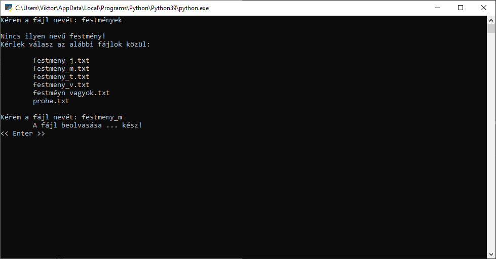
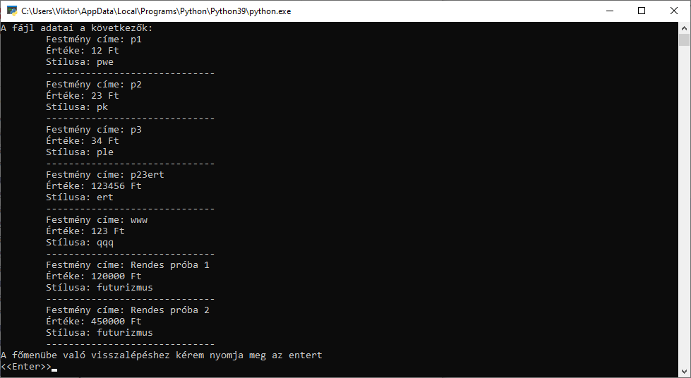
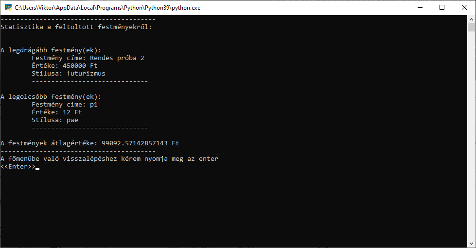

Beolvasás, kiíratás és statisztika
Ebben a részben megleshetitek hogyan is néz ki a beolvasás és a kiírás. Természetesen itt is több modulról van szó. Ha mindenki kész, el is kezdem.
Beolvasás:
Kicsit bonyolultabb a helyzet mint gondolnád. Mégpedig azért, mert nem csak egy egyszerű fájlból való beolvasás valósul meg. Hanem egészen pontosan figyeli azt is, hogy létezik-e olyan nevű adatbázis. Ha nem talál, közli a felhasználóval, majd kilistázza mik közül választhat és újra megkérdi melyik is legyen az.
Kiírás:
Ez az egyszerűbb folyamatok közé tartozik, de annál is fontosabb! Kilistázza az adatbázis tartalmát emberi nyelvre lefordítva, hogy mindenki megértse azt.
Statisztika:
Ha már az adatok megjelenítésnél tartunk, engedjétek meg, hogy megemlítsem az elemzés részét is. A statisztika modul képes kiírni a legolcsóbb és a legdrágább festményt, ami található az adatbázisban, valamint képes megmondani az átlagárukat is.
